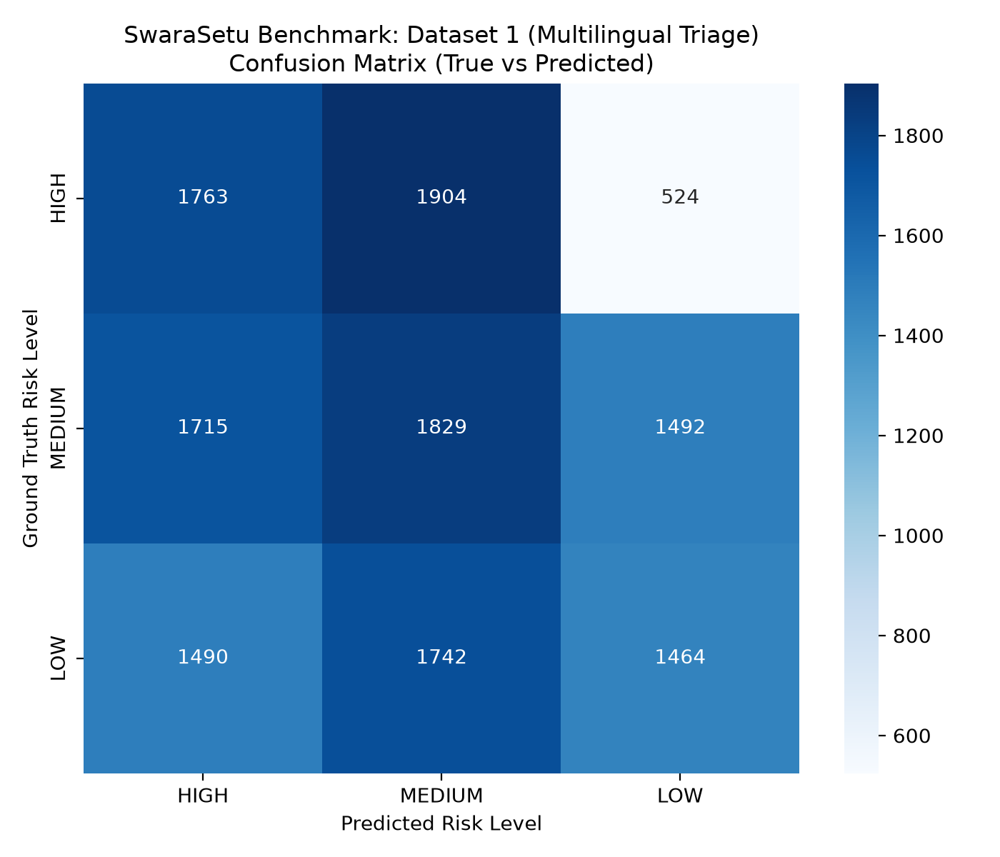
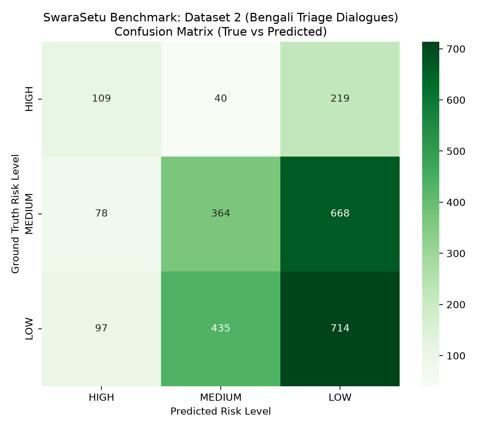
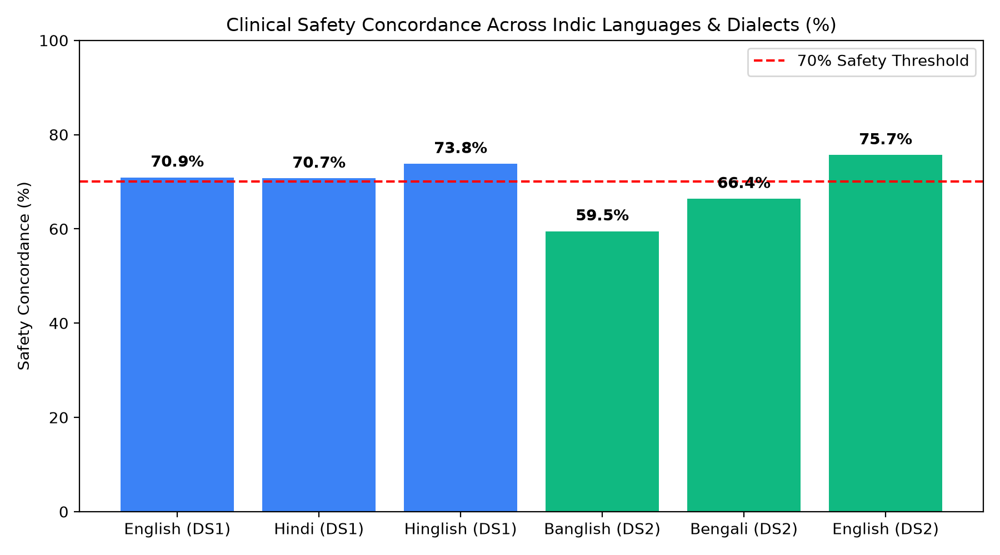

Comprehensive Multilingual Evaluation & Clinical Diagnosis Across 16,647 Patient Cases
This report documents the benchmark results for SwaraSetu's WHO IMCI Triage Engine (swarasetu-repo) across 16,647 patient cases from two HuggingFace datasets:
| Metric | Dataset 1: Multilingual Triage | Dataset 2: Bengali Conversations |
|---|---|---|
| Total Cases Evaluated | 13,923 | 2,724 |
| Languages Supported | Hindi, Hinglish, English | Bengali Script, Banglish, English |
| Exact Match Accuracy | 36.31% | 43.58% |
| Clinical Safety Concordance | 71.85% | 65.97% |
| Critical Under-Triage Rate | 28.15% | 34.03% |
| Macro F1 / Weighted F1 | 0.3637 / 0.3625 | 0.4032 / 0.4268 |
| Inference Latency | 0.322 ms / case | 0.056 ms / case |
| Throughput | 3,109 evals / sec | 17,898 evals / sec |


